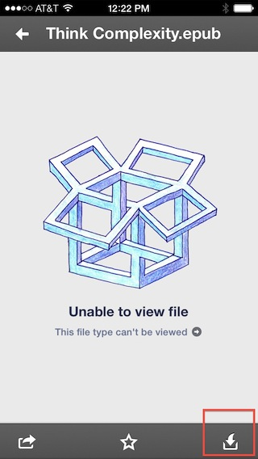

Laptop or desktop computer — Get either the ePub or PDF. *
iPad, iPhone, iPod touch — Download the ePub or the PDF and read it in iBooks or the reader of your choice.
Kindle — Get the Mobi file and load it onto your Kindle.
Android — Read the .apk or ePub on your favorite reader
Nook — The ePub and PDF formats work well on this reader.
Sony Reader — ePubs work well on your Sony Reader.
Windows Phone — Read the ePub, Mobi, or PDF on the ebook reader of your choice.
Laptop or desktop computer
For the best experience reading your ebook on a computer, we recommend using the PDF format in Adobe Reader. Adobe Reader is our recommended PDF reader and can be downloaded for free from here - http://get.adobe.com/reader.
Another option is to use the ePub format in Adobe Digital Editions, which is also a free download from here - http://www.adobe.com/products/digital-editions/download.html
To open the PDF in Adobe Reader, you usually just have to double-click on it. Another way is to right-click on the file and choose "Open With" from the pop-up menu and choose Adobe Reader.
It's the same with an ePub in Adobe Digital Editions, except for choosing that from the Open With comm
iPad, iPhone, iPod touch
The best experience reading an ebook on the iPad, iPhone or iPod is by using the included app called iBooks. iBooks works best with the ePub format of the ebook, although you can use the PDF. (for more info, see "Reflowable Vs Fixed Layout Ebooks"
There are a few ways to get your ePub or PDF file into iBooks on your device.
Logging into your oreilly.com account and downloading it directly
The easiest way to get the ebook onto you device is to log directly into your oreilly.com account and download the ePub or PDF. (If you are on a iPhone or iPod, you might want to try our mobile account page - http://oreilly.com/e ). Once the ePub file downloads into the browser, the browser will show the file with a box that says "Open in iBooks". Just tap on that, and the ePub is copied to iBooks. When you download the PDF, it downloads into the Safari browser (you could read it there, but it's not a very good experience). Once it's loaded, tap the screen once and in the upper right corner a box will pop up that says "Open in iBooks". You have to tap it quickly as it goes away after a couple of seconds.
Plugging your device into your computer and syncing with iTunes
Another way is to download the ebook to your computer, and then drag it into the iTunes icon or the iTunes library window. iTunes automatically puts it into the Books library. Plug your device in and once iTunes recognizes it, you can drag the ebook from the Books library onto the iPad's name in the upper right part of the window, which will expand as you drag over it.
Dragging ebook to iPad in iTunes
You can also click on the iPad once it shows up, and choose Sync at the bottom of the window.
Using Dropbox to send the file to your device and opening it from the Dropbox app.
You can also use the Sent to Dropbox feature in your oreilly.com account to send your ebook to your Dropbox account. When you have the Dropbox app installed on your device, the ebook will show up there. Once you tap on the file name, it will download it to your device's Dropbox, but with the ePub format it will say "Unable to view file". Just tap the box with an arrow pointing down into it ("Open In") and choose iBooks from the menu that appears. Tap the box in the lower right to open in iBooks
Kindle
Section content goes here
Android
Section content goes here
Nook
Section content goes here
Sony Reader
Section content goes here
Reflowable Vs Fixed Layout Ebooks
There are basically two types of ebook layouts available. Fixed or static layout, and reflowable. PDFs are a fixed or static layout, which means the that page is exactly the same layout as in the print book and it stays that way even if you increase the size of of the view. The ePub and mobi formats are reflowable, which means that the page layout scales to fit different screen and font sizes by changing page breaks and paragraph widths. Since they don't have a fixed page, when you increase the font size, the total number of pages increases.